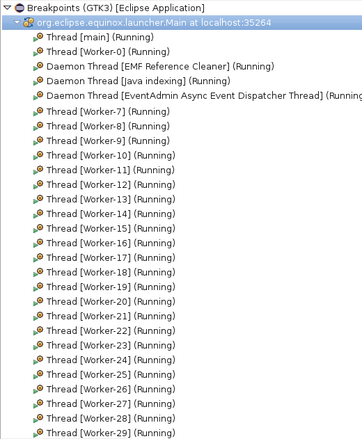
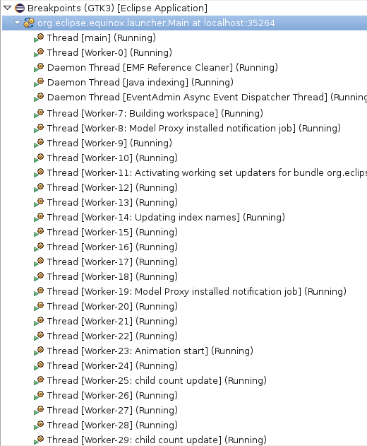
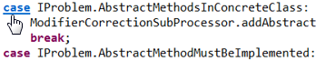
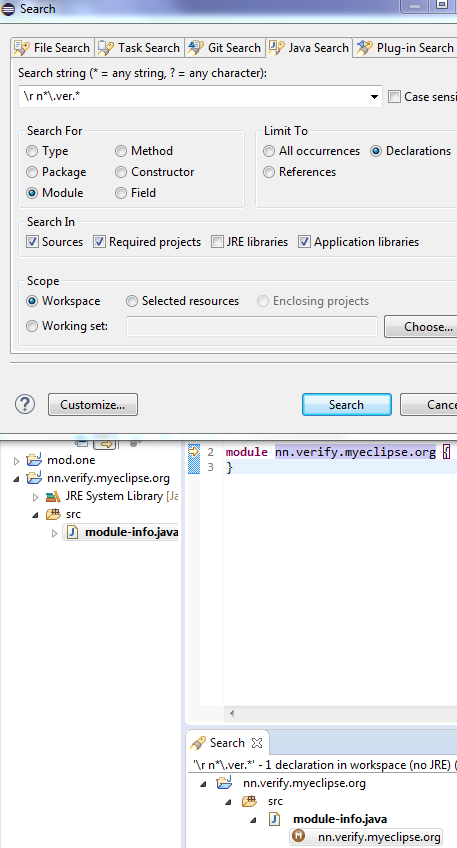
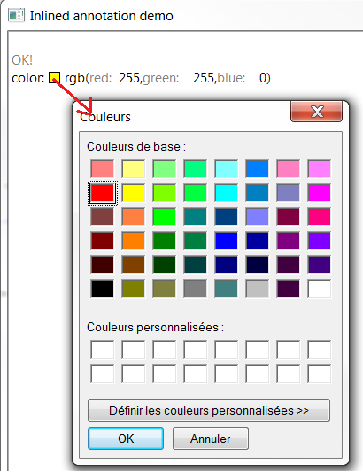

Job names for Worker thread names. Previously all
running Worker's got enumerated thread names, without any hint what the
current Worker is actually doing:

Now theJob name is added
next to the Worker name:

Technically speaking, Java debugger automatically adds a new (user invisible) breakpoint in the JVM and notifies clients (like Debug view) on a breakpoint hit. If this behavior is undesired for some reason, product owners can disable it via product customization.
The property value is:
org.eclipse.jdt.debug.ui/org.eclipse.jdt.debug.ui.javaDebug.ListenOnThreadNameChanges=false
case or default
keywords to quickly navigate to the beginning of the switch statement.

import java.sql.Driver;
module hello {
exports org.example;
requires java.sql;
provides Driver with org.example.DriverImpl;
}
Then select a source folder in a Java 9 project in the Package Explorer view and use Ctrl+V (Edit > Paste) to paste it.
This automatically creates a module-info.java file in the source folder with the copied content.


You can use filtering to display only settings with names matching a specific phrase. Filtering by values is also possible (prefix a value filter with a tilde).

Most sections have a "Modify all" button in their header that lets you set all their preferences to the same value with one click.

Some preferences have more convenient controls. For example, number values can be easily modified with arrow buttons. Wrap policy settings are controlled by simple toolbars so that you can see and compare multiple policies at once.

In the preview panel you can now use your own code to immediately see how it will be affected by the modified settings. You can also see the raw form of standard preview samples and make temporary modifications to them.


Test source folders and dependencies are shown with a darker icon in the build path settings, the package explorer and other locations. This can be disabled in Preferences > Java > Appearance:

Referenced projects can contain test sources and have test dependencies themselves. Usually, when test sources are compiled, the test code in projects on the build path will be visible. As this is not always desirable, it can be changed by setting the new build path attribute Without test code, that is available for projects, to Yes.

Build path entries configured like this have a decoration [without test code] after the project name,
which can be disabled in Preferences > General > Appearance > Label Decorations:

For each project, compilation is now done in two phases: First all main sources (which cannot see any test-code on the build-path) and then all test sources.

As a consequence, if the project is a modular Java 9 project, test dependencies like JUnit can not be referenced in
the module-info.java, as they will not be visible while compiling it.
The solution used to handle this is the same, that Maven uses: When test dependencies are put on the classpath, the module being compiled will automatically be configured to read the unnamed module during the compilation of the test sources, so the test dependencies will be visible.
Of course, code completion will not suggest test code in main sources:


There are now two dynamic Java working sets Java Main Sources and Java Test Sources containing the source folders grouped according to value of the Contains test sources attribute. This can for example be used to remove warnings in test sources from the problems view:

To achieve this, create a new filter that shows warnings for the Java Main Sources working set and select it with the All Errors on Workspace filter:

There are also dedicated filters to quickly remove hits in main code or test code from Java search results:

Similar, there is a filter to remove test code from Call hierarchies:

Another filter to remove test code exists for Quick type hierarchies:

Test source folders will be preselected in the New JUnit Test Case-Wizard

In Run and Debug configurations, the Classpath tab (or Dependencies tab when launching with Java 9) contains a new option Exclude Test Code, that is automatically preselected when launching a Java Application from a source folder that is not marked to contain test sources:

When launching with Java 9 and this option is not selected, command line options will automatically be added so modules that have a non-empty classpath read the unnamed module. These command line options are part of what can be overridden using the new Override Dependencies button.

Similar, when an exception breakpoint is hit, the exception being thrown is shown.



In the above example, all the characters trailing "/r " form a Java regular expression to denote a module name which starts with zero or more 'n's followed by the string ".ver" and followed again by zero or more number of arbitrary characters.
Another example would be to search for all modules that start with java.x followed by zero or more
characters which is given by the regular expression /r java\.x.* -
note the backslash for . to consider this as a "normal" character instead of the special regex]. Yet another example would be
search for all module names that start with j followed by zero or more characters and ending with .xml which in regex language
translates to /r j.*\.xml and here please note that the first '.' is the special regex character while the second '.' is
escaped to denote that this is a normal character.
@NonNullByDefault, the compiler will interpret this
as the global default for all types in this module:
@org.eclipse.jdt.annotation.NonNullByDefaultmodule my.nullsafe.mod { ...
Note, however, that this requires an annotation type declared with target ElementType.MODULE.
Since the annotation bundle org.eclipse.jdt.annotation is still compatible with Java 8,
it cannot yet declare this target. In the interim, a preview version of this bundle with support for
modules will be published by other means than the official SDK build.
Require-Capability and Provide-Capability manifest headers.
These dependencies are taken additionally into account when computing the required bundles for a selected set of bundles
from the target platform.
The most noticeable place where this feature is in the Eclipse launch configuration page
i.e. Eclipse launch configuration -> Plug-ins -> Add Required Plug-ins
For example, a usual effect is that the plug-in org.apache.felix.scr with the
dropdown "Launch With: plug-ins selected below" selected on Plug-ins tab.
will be additionally selected by the action. This plug-in declares Provide-Capability: osgi.extender, which
is consumed as Require-Capability: osgi.extender by some plug-ins.
Further the computation of required plug-ins is performed recursively now until added plug-ins do not introduce more transitive requirements.


A code mining represents a content (ex: label, icons) that should be shown along with source text, like the number of references, a way to run tests (with run/debug icons), etc. The main goal of code mining is to help developer to understand more the written/writing code
A code mining is represented byorg.eclipse.jface.text.codemining.ICodeMining which are provided by org.eclipse.jface.text.codemining.ICodeMiningProvider
The org.eclipse.jface.text.source.ISourceViewerExtension5 provides the capability to register org.eclipse.jface.text.codemining.ICodeMiningProvider and update code minings.
The example CodeMiningDemo draws classes references / implementations code minings:

org.eclipse.jface.text.codemining.ICodeMiningProvider in text editor using ISourceViewerExtension5.
Associating providers via this extension doesn't automatically enable code-mining, so that clients are also supposed to use a reconciler or whatever event mechanism to invoke ISourceViewerExtension5.updateCodeMinings().
For instance you can consume the org.eclipse.jface.text.codemining.CodeMiningReconciler to update the registered CodeMining providers.
The GenericEditor Example display number of referenced projects:

This sample consumes the code mining provider ProjectReferencesCodeMiningProvider
which is registered with the org.eclipse.ui.workbench.texteditor.codeMiningProviders extension point:
<extension
point="org.eclipse.ui.workbench.texteditor.codeMiningProviders">
<codeMiningProvider
class="org.eclipse.ui.genericeditor.examples.dotproject.codemining.ProjectReferencesCodeMiningProvider"
id="org.eclipse.ui.genericeditor.examples.dotproject.codemining.references"
label="Project references">
<enabledWhen>
<with variable="editorInput">
<adapt type="org.eclipse.core.resources.IFile">
<test property="org.eclipse.core.resources.contentTypeId" value="org.eclipse.ui.genericeditor.examples.dotproject" />
</adapt>
</with>
</enabledWhen>
</codeMiningProvider>
</extension>
This code mining provider is updated with the org.eclipse.jface.text.codemining.CodeMiningReconciler reconciler.
<extension
point="org.eclipse.ui.genericeditor.reconcilers">
<reconciler
class="org.eclipse.jface.text.codemining.CodeMiningReconciler"
contentType="org.eclipse.ui.genericeditor.examples.dotproject">
</reconciler>
</extension>
Consumer<MouseEvent> getAction(MouseEvent e).
The example InlinedAnnotationDemo defines
an action to open the org.eclipse.swt.widgets.ColorDialog when you click on the color annotation:
public ColorAnnotation extends LineContentAnnotation {
...
@Override
public Consumer<MouseEvent> getAction(MouseEvent e) {
return ev -> {
// Open the Color dialog when color annotation is clicked
};
}
}

org.eclipse.debug.core.launchConfigurationTypes extension point:
<extension
point="org.eclipse.debug.core.launchConfigurationTypes">
<launchConfigurationType
allowPrototypes="true"
delegate="org.eclipse.jdt.launching.sourcelookup.advanced.AdvancedJavaLaunchDelegate"
delegateDescription="%localJavaApplicationDelegate.description"
delegateName="%eclipseJDTLauncher.name"
id="org.eclipse.jdt.launching.localJavaApplication"
migrationDelegate="org.eclipse.jdt.internal.launching.JavaMigrationDelegate"
modes="run, debug"
name="%localJavaApplication"
sourceLocatorId="org.eclipse.jdt.launching.sourceLocator.JavaSourceLookupDirector"
sourcePathComputerId="org.eclipse.jdt.launching.sourceLookup.javaSourcePathComputer">
</launchConfigurationType>
</extension>
and also implement org.eclipse.debug.ui.AbstractLaunchConfigurationTab.initializeAttributes() for their specifics tabs.
Group widget text can now have a different color than the system default. Client can use Group#setForeground(Color)
to change the text color. Screen-shot for reference:

StyledText#getOffsetAtPoint(Point) is a replacement for
StyledText#getOffsetAtLocation(Point). It behaves similar, except that it does
not throw an IllegalArgumentException when no character is at the given location,
but returns -1 instead.
Using the new method will result in better performance when used in tight loops. Especially the Show Whitespace editor feature benefits from using the new API.
The method StyledText#getOffsetAtLocation(Point) has been deprecated.
SWT.OpenUrl has been added to SWT to notify clients that an URL should be opened.
Listeners for OpenUrl event should be added to a Display. The event's text field contains the URL to be opened.
URLs can be passed to Eclipse in the same way in which file paths are passed from the command line (i.e, as arguments to the default action
--launcher.openFile). An URL can also be passed by configuring a custom URL handler for the platform.
Webkit1 was known to crash at times. Webkit2 is stable and runs in a separate process, thus providing enhanced performance and is more secure.
Webkit2 was also necessary because Webkit1 is no longer being provided on newer Linux distributions (e.g Fedora 27)
To fallback to using Webkit1 (if needed), you can set the environment variable using: export SWT_WEBKIT2=0
To inspect which version of Webkit you're running Eclipse under, set variable: export SWT_LIB_VERSIONS=1, launch
Eclipse/SWT and open an internal browser instance. You should see "SWT_LIB Webkit (1 or 2) " in the console
See Webkit2 port bug for more details.
SearchPattern#createPattern(String , int , int , int ) is enhanced for
supporting regular expression search for module declarations. Please note that the flag
SearchPattern#R_REGEXP_MATCH used for regular expression search is applicable exclusively for
module declarations. No other flag (for eg.SearchPattern#R_CASE_SENSITIVE) should be used in
disjunction with this match rule.